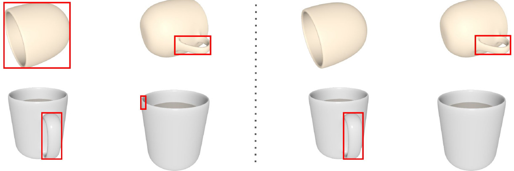
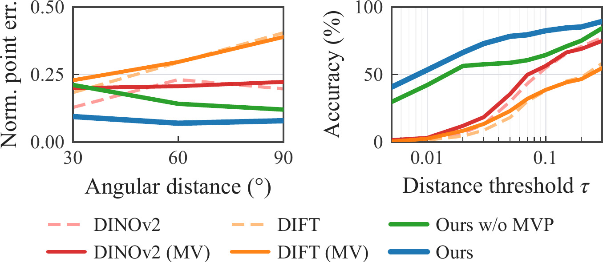
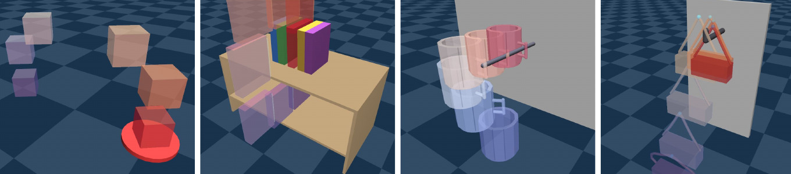
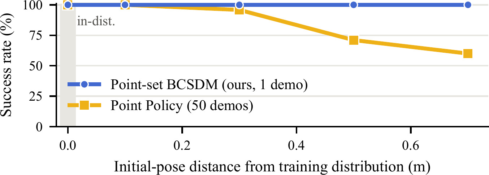
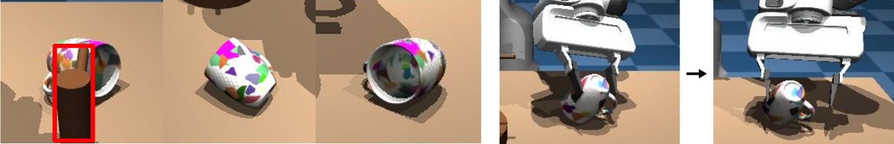

POIL: Point-based One-Shot Imitation Learning
with Stable Dynamical Systems
Preprint · 2026
1Seoul National University
2Yonsei University
*Co-corresponding authors
Preprint · 2026
We present POIL, a point-based one-shot imitation learning framework with stable dynamical systems. While one-shot imitation avoids collecting extensive demonstrations, successful one-shot manipulation requires not only transferring a demonstrated trajectory to a novel object but also executing it robustly under changing scene conditions, grasp configurations, and external disturbances. POIL addresses both problems through a shared representation: a set of 3D points on the object's functional part, used jointly for trajectory transfer and closed-loop execution. The one-shot transfer from the demonstrated trajectory is enabled with point correspondences. POIL grounds the shared functional part with a multi-modal large language model, and transfers the trajectory across viewpoint, pose, and object category changes. During execution, multi-view tracking observes the same points online, and Point-set BCSDM drives them in closed loop by projecting per-point velocities onto a single rigid-body twist computed from the tracked points alone. This extends stable dynamical models from an SE(3) pose to a point set without requiring a known 3D model or pose estimator. We show that at the goal the controller becomes a gradient flow on the classical SO(3) potential, so its terminal phase inherits the almost-global convergence of that potential under a rigid-object assumption. Across simulation and real-robot experiments, POIL transfers a single demonstration across object category, grasp pose, and goal geometry, while recovering from external disturbances during execution.
Trajectory transfer [7]–[10] carries one demonstration to a novel object by establishing correspondences to the target scene, then replays the transferred motion open loop. Closing the loop corrects deviations, but on its own gives no assurance of actually reaching the goal from states far outside the demonstration. Stable dynamical systems [11]–[13] do: a time-independent velocity field whose solutions converge from any initial state. They assume, however, that the state representation and the reference trajectory are already given, and that the state is a single rigid-body SE(3) pose — the object, which needs a known 3D model and runtime pose estimation, or the gripper, assuming the object is held in a fixed grasp. The two are complementary; their integration is largely unexplored.
| Approach | No action pretraining |
Object generalization |
Closed loop |
Convergence guarantee |
|---|---|---|---|---|
| Meta / in-context [4], [6] | ✗ | in-dist. | ✓ | ✗ |
| Correspondence [9], [10] | ✓ | func. part‡ | ✗ | ✗ |
| Alignment [7], [8] | ✓ | intra-cat. | ✓† | ✗ |
| Analytical stable dynamical systems [11], [12] | ✓ | ✗ | ✓ | ✓ |
| POIL (ours) | ✓ | func. part‡ | ✓ | ✓ |
†Closed-loop alignment to an intermediate pose, then open-loop replay. ‡Requires geometrically similar parts. Reference numbers are the paper's.
They do not compose because they disagree about the state. Gripper pose is not object-centric — change the grasp and the same trajectory moves the object differently. Object pose is, but needs a 3D model and a runtime estimator. POIL takes the state to be 3D points on the functional part: semantics place them, a multi-view tracker observes them, and they define a potential that provably descends to the goal.
Transfer offline, execute online — on the same points.
An interactive visualization of Point-set BCSDM. The eight corners of a rigid box are the tracked points; each contracts toward its target, and the per-point velocities are projected onto a single rigid-body twist. Three runs play at once, from different starting rotations: a random one, one half a degree off a \pi-rotation about a principal axis of W, and one exactly on it.
Solid: the point set now; dashed: the goal R = I; arrows: the per-point contraction velocity. Drag to orbit.
Ball model of SO(3): radius \text{angle}/\pi along the rotation axis. Centre is the goal; on the surface \pm e_k are the same rotation, so the six red marks are three critical points.
The red run is the word almost: a genuine equilibrium, but a saddle, so half a degree off it already rolls home. The set that never converges has measure zero.
Mugs, pans and scissors from 12 viewpoints 30° apart; one view is the demonstration, the target view sweeps away from it. Baselines lift dense DINOv2 and DIFT correspondences to 3D, from a single view or aggregated across two views (MV).
Asked for a handle one view at a time, the detector returns a box in every image whether or not the handle is there — a mug rim, the wrong side. Querying all views as one input lets it settle on the candidate that is consistent across them.


Every policy gets ground-truth point trajectories and actuates the object directly, isolating control. Initial poses use the full yaw range; Near is the box around the demonstration start that the 50-demo Point Policy was trained on, Far is sampled outside it.

| Policy | #Demos | PnP Cube | Mug Insertion | Reshelving | Hanging Bag | ||||
|---|---|---|---|---|---|---|---|---|---|
| Near | Far | Near | Far | Near | Far | Near | Far | ||
| Point Policy | 1 | 100 | 54 | 33 | 25 | 71 | 31 | 51 | 45 |
| Point Policy | 50 | 100 | 100 | 100 | 84 | 100 | 57 | 100 | 100 |
| Instant Policy | 1 | 100 | 100 | 0 | 0 | 4 | 3 | 23 | 19 |
| POIL (Point-set BCSDM) | 1 | 100 | 100 | 100 | 100 | 100 | 100 | 100 | 100 |
Success rate (%) over 100 trials.
PnP Cube is a rigid translation and everything solves it. Instant Policy then collapses on the constrained tasks, which we attribute to distribution shift — its motion prior is trained on scenes with near-linear trajectories — though which factor dominates was not isolated. Point Policy has no timestep cue from one demonstration and drives toward the final pose out of distribution; fifty demonstrations buy back Near and still leave Reshelving at 57 in Far. POIL holds 100% everywhere from one.

Nothing given: ground, transfer, select a grasp, track, control. 7-DoF Franka Panda in MuJoCo.
The teapot is displaced mid-pour. The gripper ends at a different pose; the teapot does not — the controller regulates object points, not the gripper.
On a side-lying mug the demonstrated rim grasp is blocked by collision. POIL takes a different feasible grasp and still drives the handle to the rod.
The same demonstration, warped onto a goal it was not recorded on.
The cube is lifted higher to clear the taller wall before it comes down into the box.
The rod's tip now turns upward, so the handle has to come in over the hook rather than straight along the rod.
The slot is both tilted and moved; the same warp handles the rotation and the spatial shift together.
Rendered from the recorded runs; demonstration and execution are paced to the same length.
Over 50 randomized yaw angles on the side-lying mug — the hardest setting — POIL completes 39. Of the 11 failures, 7 come from part detection and 3 from finding no valid grasp after filtering; the remaining one is a mug–floor collision the gripper-trajectory feasibility check does not catch. Part detection under self-occlusion and grasp selection, not the downstream point-based controller, are the bottlenecks.

7-DoF Franka Emika Panda, two ZED 2i depth cameras. Grasping is isolated on hardware: the mug is too wide to grasp from the outside and its rim reconstructs poorly in depth, while the flat tray and the bags need a human to prop them up before any grasp is possible. The operator therefore places the object in the gripper at an arbitrary grasp, and the rest of the pipeline is evaluated.
Two demonstrations, three target objects each. Swap the demonstration on the left, then pick what it is transferred to.
@misc{kim2026poil,
title = {POIL: Point-based One-Shot Imitation Learning with Stable Dynamical Systems},
author = {Kim, Sang Min and Seo, Jinwoo and Heo, Hyeongjun and Lee, Junho and Lee, Yonghyeon and Kim, Young Min},
year = {2026},
howpublished = {Preprint},
url = {https://sangminkim-99.github.io/poil/}
}